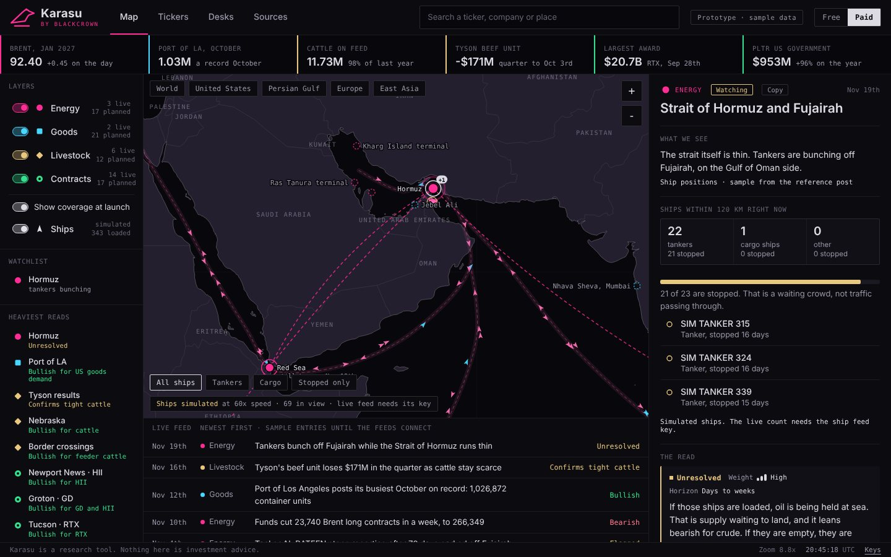
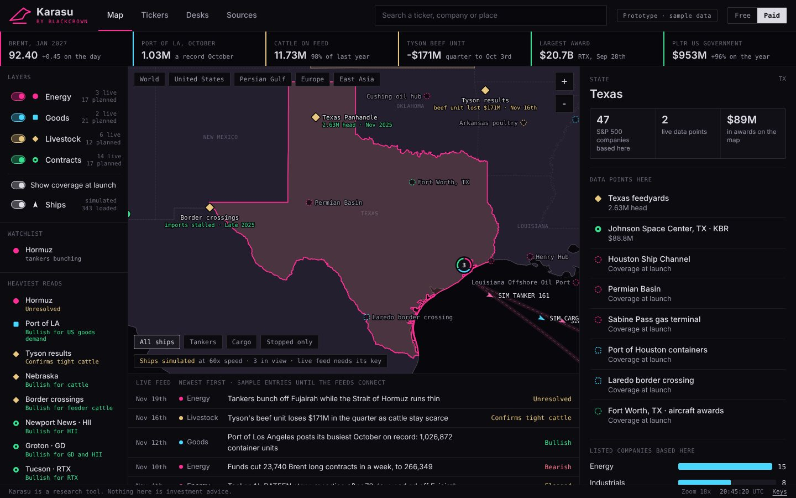
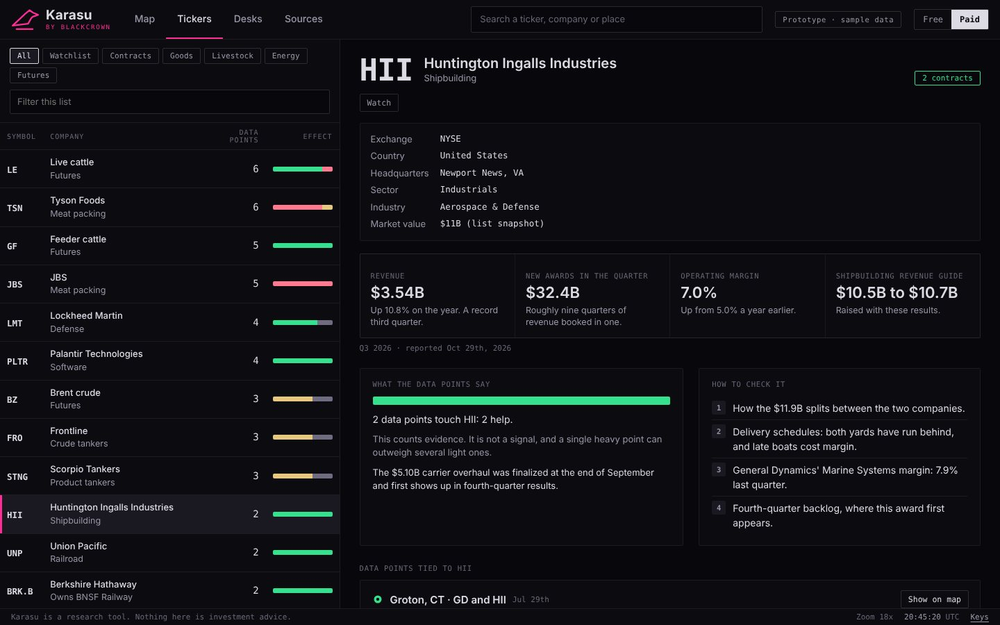
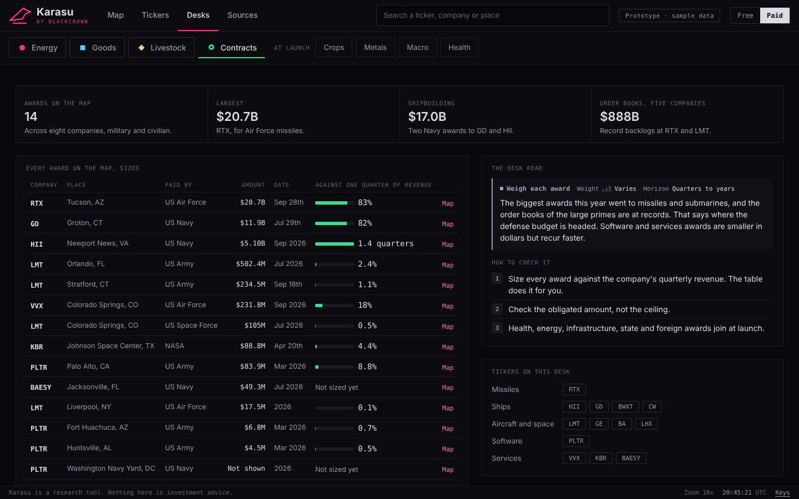

Market intelligence terminal
The real-world events behind a ticker, on one map.
Karasu ties ships, ports, feedyards and contract awards to the stocks and futures they touch. Every data point shows what was seen, what it likely means, and how to check it yourself.
Free plan, no card. A research tool, not investment advice.

How a data point reads
Four parts, the same every time.
A headline tells you something happened. A Karasu data point also tells you how much it matters, to whom, and what would prove it wrong. This one is real: it went on the map on Nov 16th.
- 01
What we see
The fact, with its source and date.
Tyson's beef unit lost $171M, adjusted, in the quarter to Oct 3rd. Beef volume fell 6% on limited cattle supplies.
- 02
The read
Direction, weight and time horizon, in plain English.
Confirms tight cattle. Weight: high. Horizon: quarters. Scarce cattle cost more than packers can pass on.
- 03
How to check it
Numbered steps that would confirm the read or flip it.
A smaller loss than the company guides would mean the squeeze is easing. More cattle entering feedyards is the first sign of relief.
- 04
Tied to
The tickers and futures it touches, and what it does to each.
Hurts TSN and JBS. Helps live cattle and feeder cattle futures. Helps PPC, as shoppers switch to chicken.
What is inside
Open a place, a ship or a company and follow the thread.
Everything links. A state leads to its companies, a company to its contract awards, an award to the place it is performed.

The map
Zoom from the whole world to a single port. Select a ship for its speed, course, draught and destination. Select a state or a country for its data points and the listed companies based there.
- Ships you can select, with a count of how many are stopped near any chokepoint
- A filter that shows only the ships that are not moving
- Lines from each data point to the ones it connects to

Tickers
5,287 listed companies. Where data points touch a company, its page shows each one and whether it helps or hurts. Contract awards are sized against the company's quarterly revenue, so a $5B award and a $17M award do not look the same.
- A watchlist for tickers, ships and data points
- Copy any read with its source and date

Desks
One desk per subject, with the whole picture in one place: energy, goods, livestock and contracts. Each has its own read, the checks behind it, and the supply chain from source to shelf.
Is it for you
Who Karasu fits, and who it does not.
We would rather you know before you sign up.
A good fit if you
- want the reason behind a move, with a source you can open
- research companies through what they ship, win and report
- follow energy, cattle, freight or defense names and want the physical picture
- would rather check a claim than take it on trust
Not the right tool if you
- want buy and sell signals. Karasu does not give them.
- need real-time quotes. Prices here are delayed.
- need charts, order flow or tick data
- need an institutional risk and portfolio system
Coverage
Early access, and honest about it.
Every data point carries its source and its date, so you always know how fresh it is. This is where each layer stands today.
| Layer | What it shows | How it updates | Status |
|---|---|---|---|
| Ships | Tankers and cargo ships: position, speed, draught, destination | Continuously, from shore stations | Live feed |
| Energy | Chokepoints, anchorages, trader positioning, crude prices | Weekly and daily | Loaded by hand |
| Goods | Port volumes, rail freight, who moves the boxes | Monthly and weekly | Loaded by hand |
| Livestock | Cattle on feed by state, packer results, import halts | Monthly | Loaded by hand |
| Contracts | Government awards by company and place, sized against revenue | Daily | Loaded by hand |
| Crops, metals, macro, health | The next desks | Planned |
Loaded by hand means a person entered the figure from the named source while its automatic feed is being connected. Ship positions come from shore stations, so coverage thins out in mid-ocean.
Pricing
Start free. Pay when the reads are worth it to you.
The free plan shows you what happened. The paid plan adds what it means and how to check it.
Free
$0
No card needed.
- The full map, with ships, states and countries
- Every listed company's page
- What we see on every data point, with source and date
- Watchlist
Paid
Price to be announced
The paid plan opens soon. Free accounts will be able to upgrade from the account page.
- Everything in Free
- The read on every data point: direction, weight, horizon
- How to check it, step by step
- Tied tickers, and whether each is helped or hurt
- Desk reads and the connections between data points
Questions
What people ask first.
- Is this investment advice?
- No. Karasu is a research tool. It shows data and explains what it may mean. It never tells you to buy or sell, and nothing in it is a recommendation. Read the disclosure.
- Where does the data come from?
- Public sources: ship position broadcasts, government contract records, agriculture department reports, port authority releases and company filings. Every data point names its source.
- Are the ships real time?
- Positions arrive continuously from shore stations and the map refreshes every few seconds. Ships far from shore can go unreported until they come back into range.
- Are the prices real time?
- No. Any price in Karasu is delayed or end of day. Use your broker or charting platform for live quotes.
- What do I get for free?
- The whole map and every company page, with the facts on each data point. The read, the checks and the tied tickers are on the paid plan.
- Who makes Karasu?
- BlackCrownVxJ.LLC, the company behind Korvus, a news and analysis terminal for index futures traders.
See the map for yourself.
A free account takes a minute and needs no card.